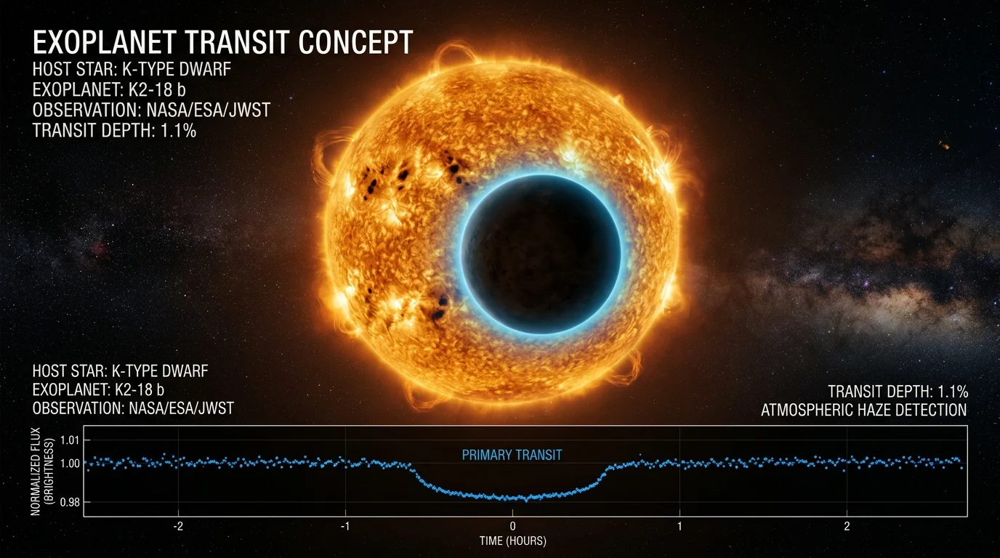

51 Pegasi b (Dimidium)
First planet found around a Sun-like star. A Jupiter-mass giant orbiting in just 4.2 days—proving giant planets can migrate inward.
Astronomy & Space Science · Grades 6–12
For centuries humans wondered whether other stars held planets of their own. Since the first confirmed discoveries in the 1990s, astronomers have uncovered thousands of extrasolar worlds—from scorching gas giants skimming star surfaces to rocky planets clustered around dim red dwarfs.
Investigation 1 · Transit Photometry
Most exoplanets are far too faint and close to their star to photograph directly. Instead, telescopes like Kepler and TESS measure a star’s brightness over time. When a planet crosses in front of its star, it blocks a tiny fraction of starlight proportional to its cross-sectional area: ΔF / F ≈ (Rp / R★)².
Real astronomers must tell true planets apart from grazing binary stars. Inspect a mystery signal and classify what produced it:
Inspect the light curve shape, depth, and period, then select the matching object above.

Investigation 2 · Observing Toolkit
Each detection technique reveals different properties—and every technique has blind spots. Switch methods to compare how astronomers measure size, mass, and orbit.
Field Guide · Real Worlds
Unlike our tidy inner-rocky / outer-giant layout, exoplanet surveys revealed super-Earths, lava worlds, and seven-planet resonant chains packed inside Mercury’s orbit.
First planet found around a Sun-like star. A Jupiter-mass giant orbiting in just 4.2 days—proving giant planets can migrate inward.
About 1.17 Earth radii orbiting near the outer edge of a cooler K/M dwarf’s habitable zone with a 130-day year.
Seven Earth-sized rocky planets locked in orbital resonance around an ultra-cool dwarf star 40 light-years away—all fitting inside Mercury’s orbit.
So close to its star (1.09-day orbit) that tidal gravity stretches it into an egg shape while intense heat strips away its atmosphere.
Just 4.24 light-years away around the Sun’s nearest stellar neighbor, receiving roughly 65% of Earth’s sunlight every 11.2 days.
A young super-Jupiter 63 light-years away whose 8-hour spin rate was measured directly from telescope spectra.
Astrochemistry · Habitability
During a transit, a sliver of starlight passes through the thin ring of atmosphere surrounding the planet. Gases like water vapor (H2O), carbon dioxide (CO2), methane (CH4), and sodium absorb specific infrared or optical wavelengths—making the planet appear slightly larger at those colors.
The habitable zone only marks where stellar energy allows liquid water on a rocky surface—if the planet has a suitable atmosphere and magnetic shielding. Venus sits near the inner edge yet boils at 465 °C from a runaway greenhouse, while tidal flares from red dwarfs can strip air off close-in worlds.
Synthesis · Check Your Understanding
1. Planet X has twice the radius of Planet Y, and both orbit identical stars. How much deeper is Planet X’s transit dip?
Choose an answer.
2. Why is it easier for transit telescopes to spot an Earth-sized planet around an M-dwarf than around a Sun-like star?
Choose an answer.
3. Which two measurements together let astronomers calculate an exoplanet’s average density (rock vs gas)?
Choose an answer.